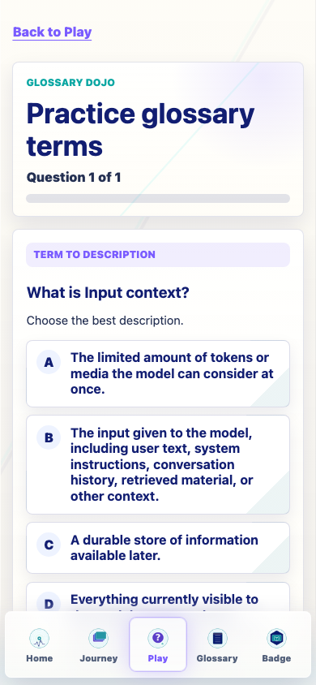
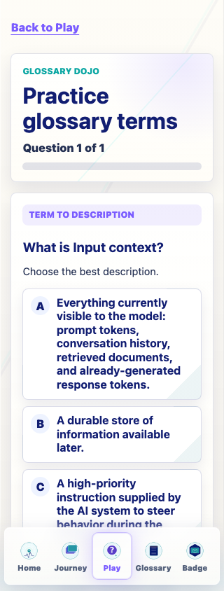
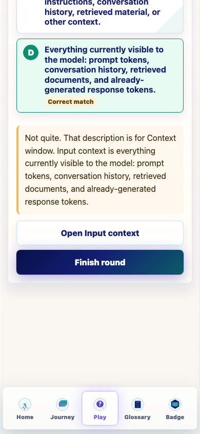
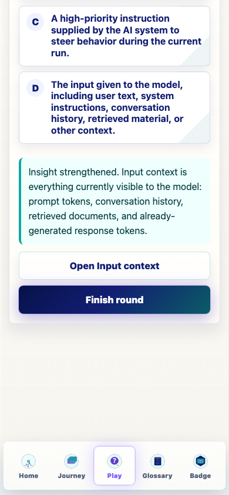
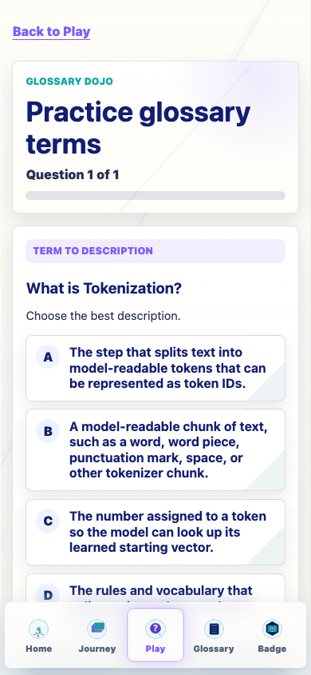
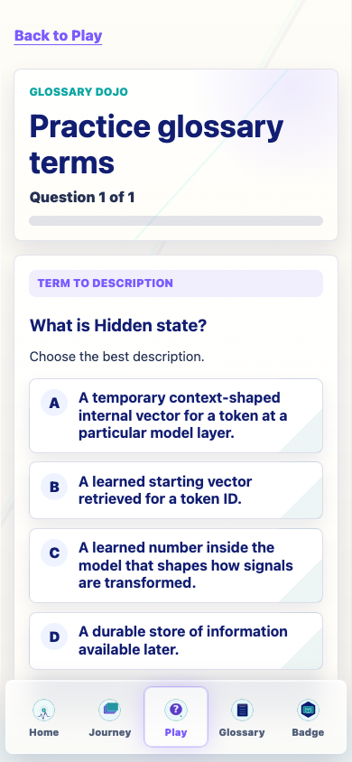
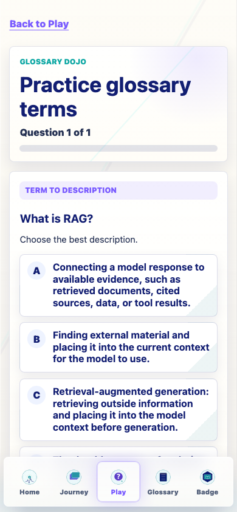

Repaired Glossary Dojo term-question wording and distractor quality while preserving Journey progress, badge logic, games, generated assets, dependencies, and checkpoint randomization.
term_to_definition now displays TERM TO DESCRIPTION, asks What is [TERM]?, and uses Choose the best description.definition_to_term now displays DESCRIPTION TO TERM and asks Which term matches this description?closest_concept now uses the less gamey label RELATED IDEAS.Insight strengthened. [TERM] is... and wrong answers identify the selected wrong term.v0.24.3.Term questions now prefer closer conceptual neighbors before distant fallback choices: confusable, related, cluster, same-stage, near, medium, far, then global.
New concept clusters support context, tokenization, representations, decoding, training, evidence, and costs/governance.
| Target | Prompt | Close distractors checked |
|---|---|---|
| Input context | What is Input context? | Memory, Prompt, Context window |
| Tokenization | What is Tokenization? | Tokenizer, Token ID, Token |
| Hidden state | What is Hidden state? | Memory, Weight, Embedding |
| RAG | What is RAG? | Retrieval, Grounding, Training |
| Softmax | What is Softmax? | Logits, Sampling, Probability |
| Water use | What is Water use? | Data center, Energy use, Governance |
Both production builds still emit the existing Vite large-chunk warning.






